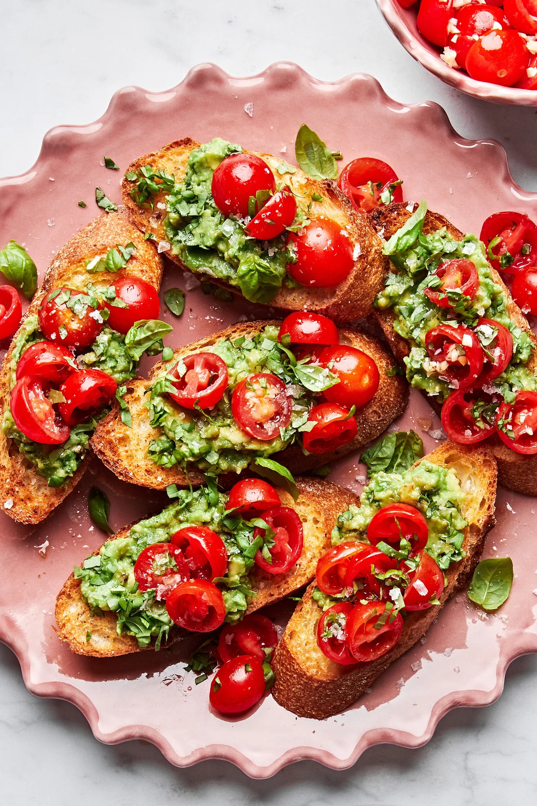
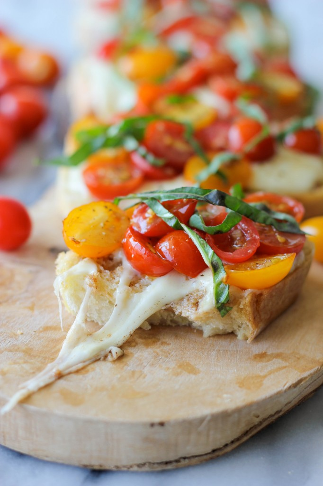
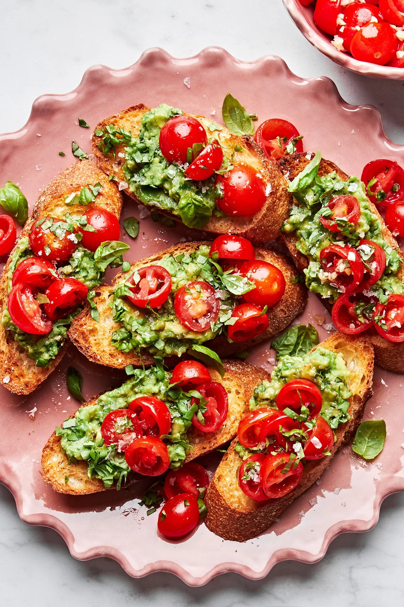
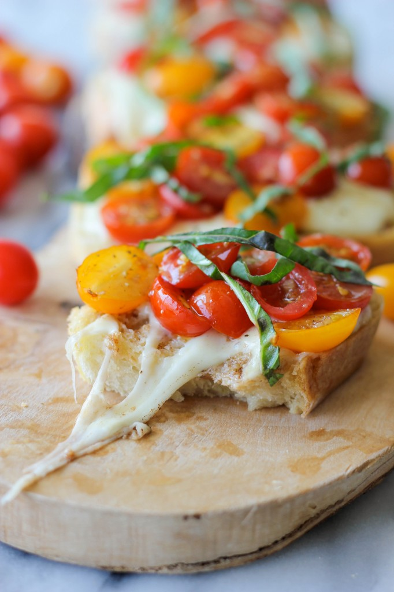

Bruschetta
Món khai vị cổ điển của Ý, Bruschetta là sự kết hợp hoàn hảo giữa bánh mì nướng giòn, thơm lừng mùi tỏi và dầu olive, cùng với lớp topping cà chua tươi mát, húng quế thơm lừng. Đơn giản, nhanh chóng nhưng vô cùng hấp dẫn và tinh tế. Đây là món ăn lý tưởng cho các bữa tiệc nhẹ, khai vị hoặc ăn vặt.
 



Nguyên liệu
- Bánh mì baguette: 1 ổ (khoảng 250-300g), cắt lát chéo dày khoảng 1.5-2 cm. Nên chọn bánh mì cũ một chút để dễ nướng giòn.
- Cà chua chín: 3-4 quả (chọn cà chua bi hoặc cà chua thường, chín đỏ, mọng nước và ít hạt để hỗn hợp không bị ướt).
- Tỏi: 2-3 tép (tùy độ đậm mùi tỏi bạn muốn, có thể tăng giảm).
- Lá húng quế tươi: Một nắm lớn (khoảng 10-15 lá), rửa sạch, để ráo, sau đó thái nhỏ hoặc xé đôi bằng tay để giữ mùi thơm.
- Dầu olive nguyên chất (Extra Virgin): 3-4 muỗng canh (để trộn cà chua và rưới lên bánh, dầu olive chất lượng tốt sẽ tăng hương vị).
- Muối: 1/2 muỗng cà phê (hoặc theo khẩu vị, dùng muối biển sẽ ngon hơn).
- Tiêu đen xay: 1/4 muỗng cà phê (hoặc theo khẩu vị, tiêu mới xay sẽ thơm hơn).
- Giấm Balsamic: 1 muỗng cà phê (tùy chọn, thêm vào hỗn hợp cà chua để tăng vị chua thanh và đậm đà).
Cách làm
-
Bước 1: Chuẩn bị hỗn hợp cà chua tươi (Topping)
- Rửa sạch cà chua. Dùng dao sắc cắt cà chua thành hạt lựu nhỏ. Nếu cà chua có nhiều hạt và nước, bạn có thể bỏ bớt phần hạt và nước để hỗn hợp không bị quá ướt.
- Bóc vỏ 1 tép tỏi, băm thật nhỏ hoặc dùng dụng cụ ép tỏi để tỏi nhuyễn mịn.
- Rửa sạch lá húng quế, để ráo nước hoàn toàn. Sau đó thái nhỏ hoặc xé đôi bằng tay để giữ được hương thơm tự nhiên của húng quế.
- Cho cà chua đã cắt hạt lựu, tỏi băm và húng quế thái nhỏ vào một tô lớn.
- Thêm 2-3 muỗng canh dầu olive nguyên chất, 1/2 muỗng cà phê muối và 1/4 muỗng cà phê tiêu đen xay vào tô. Nếu dùng, thêm 1 muỗng cà phê giấm Balsamic để tăng thêm vị chua thanh.
- Trộn đều tất cả các nguyên liệu một cách nhẹ nhàng. Để hỗn hợp nghỉ khoảng 10-15 phút ở nhiệt độ phòng để các hương vị hòa quyện vào nhau và cà chua tiết ra chút nước.
-
Bước 2: Nướng bánh mì
- Làm nóng lò nướng ở nhiệt độ 180°C (350°F). Bạn cũng có thể dùng chảo nướng chống dính hoặc bếp nướng điện để nướng bánh mì.
- Xếp các lát bánh mì baguette đã cắt lên khay nướng. Bạn có thể phết một lớp dầu olive mỏng lên cả hai mặt của lát bánh mì trước khi nướng để bánh giòn và thơm hơn.
- Nướng bánh mì trong lò khoảng 5-7 phút, hoặc cho đến khi các lát bánh mì vàng giòn nhẹ và có mùi thơm. Nếu dùng chảo, nướng mỗi mặt khoảng 2-3 phút cho đến khi vàng giòn và có vết nướng đẹp mắt.
- Sau khi bánh mì đã nướng xong, lấy ra khỏi lò. Bóc vỏ tép tỏi còn lại, cắt đôi. Dùng mặt cắt của tép tỏi chà nhẹ lên bề mặt từng lát bánh mì khi bánh còn nóng. Mùi tỏi sẽ thấm vào bánh, tạo hương thơm đặc trưng và hấp dẫn.
-
Bước 3: Hoàn thiện và thưởng thức
- Khi bánh mì còn ấm và giòn, múc từng muỗng hỗn hợp cà chua đã chuẩn bị lên đều trên bề mặt mỗi lát bánh mì. Dàn đều để topping phủ kín mặt bánh.
- Nếu thích, bạn có thể rưới thêm một chút dầu olive nguyên chất lên trên mỗi miếng bruschetta để tăng thêm hương vị và độ bóng.
- Dọn bruschetta ra đĩa và thưởng thức ngay khi còn giòn. Món này rất thích hợp làm món khai vị hoặc ăn nhẹ.
Mẹo nhỏ để Bruschetta ngon hơn:
- Chọn bánh mì: Bánh mì baguette cũ một chút (để qua đêm) sẽ dễ nướng giòn hơn và ít bị dai.
- Chất lượng dầu olive: Sử dụng dầu olive nguyên chất (Extra Virgin) chất lượng tốt sẽ làm tăng đáng kể hương vị của món Bruschetta.
- Cà chua: Nên chọn cà chua chín mọng nhưng vẫn còn độ cứng nhất định. Nếu cà chua quá nhiều nước, hãy bỏ bớt phần hạt và nước để topping không làm ướt bánh mì.
- Húng quế: Thái hoặc xé húng quế ngay trước khi trộn và không nên băm quá nát để giữ được mùi thơm đặc trưng.
- Tỏi: Chà tỏi lên bánh mì khi còn nóng giúp mùi tỏi thấm sâu và thơm hơn.
- Độ giòn của bánh: Nướng bánh mì vừa đủ giòn, không quá khô hoặc cháy. Bruschetta ngon nhất khi vỏ bánh giòn tan và topping tươi mát.
- Ăn ngay: Bruschetta nên được thưởng thức ngay sau khi làm xong để đảm bảo độ giòn của bánh mì và độ tươi của topping.
- Sáng tạo topping: Ngoài cà chua và húng quế, bạn có thể thử thêm các topping khác như phô mai mozzarella, nấm xào, olive, hoặc thịt nguội (prosciutto) để đa dạng hóa hương vị.
▶️ Xem video hướng dẫn chi tiết
← Quay lại trang chủ
Bình luận và Đánh giá
Đánh giá của bạn
Chưa có bình luận nào.